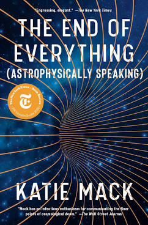

The End of Everything, by Mack
Saturday May 8, 2021
Here's a fun book by a millennial astrophysicist. I hadn't thought about a big bang with an infinite universe before; that's fun. I would have enjoyed more on how we know we're in a false vacuum and how fast everything has moved over time, but it's a light pop book.
Ways for the universe to end:
- Big Crunch (gravity crushes us)
- Heat Death (best guess; things get cold and lonely)
- Big Rip (things eventually spread out explosively, on local scales)
- Vacuum Decay (suddenly ice-9 but for everything)
- Bounce (maybe we hit another 3-brane or something?)

"I knew I would only ever really be able to accept the kind of truth I could rederive mathematically." (page 4)
If this is the standard, you will only accept mathematical truths. The book seems to care quite a bit about observation and measurement, so I assume she's being rather loose with language here.
"Translating redshifts to speeds, the pattern Hubble detected meant that the more distant a galaxy, the faster it's receding from us." (page 57)
As explained in the book, it seems like this could be read "the faster it was receding from us" because light from far away is quite old. I didn't catch it if there was an explanation of how we work out how fast we think those distant things are moving away now.
This is particularly perplexing because the book explains that it looks like (by redshift) very distant things are receding fastest, less distant things look to be receding less fast, and the nearest things look to be coming toward us. So my naive thought is: How do we know that the distant things aren't currently coming toward us now?
There is presumably some clever way to work this out?
"We glossed over this a bit in the previous chapter, but it turns out that even just determining the past expansion rate is far more difficult than it seems like it has any right to be." (page 115)
That introduces the distance ladder, but I think still doesn't address the above.
"Just like a curved fiber-optic cable can make the light inside it turn a corner, a massive object bending space can cause light to curve around it." (page 68)
It isn't quite "just like" that, I think... I mean, the trampoline analogy isn't good either...
"Measuring distance accurately over billions of light-years, however, is a lot harder [than measuring redshift]." (page 69)
This, I think, is very true. What does distance even mean?
The play Arcadia, quoted in the epigraph of Chapter 4, seems neat.
"To throw some more terminology into the mix, an evolving (i.e., nonconstant) dark energy is often called quintessence, after the "fifth element," a mysterious something-or-other that was popular to philosophize about in the Middle Ages and is not really much more precisely specified now." (page 80)
Leeloo Dallas Multipass
"As of this writing, supernova measurements allow us to measure the Hubble Constant to an accuracy of 2.4 percent."
"Which is weird, because the number we get totally disagrees with the value of the exact same number we derive from looking at the cosmic microwave background." (pages 125-126)
How does the data suggest that we're in a local minimum vacuum? How can we tell that?
"This has led physicists to suggest solutions ranging from abstract arguments aimed at narrowing down the total range of possible universes to philosophical debates about how to make advances in areas of theory in which experimental evidence may never appear." (page 161)
The epigraph for Chapter 8 quotes Hozier's "No Plan" but I prefer their "Nobody." The drums are bananas.
""By thinking about the end of the universe, just like with its beginning, you can sharpen your own thinking about what you think is happening now, and how to extrapolate. I feel like extrapolations in fundamental physics are essential," says Hiranya Peiris, a cosmologist at University College London." (page 179)
"But personally, I still feel there's a big difference, in some emotional sense, between "we go on forever" and "we don't." Nima Arkani-Hamed feels the same way. "At the absolute, absolute deepest level ... whether or not people explicitly admit to thinking about it or not (and if they don't they're all the poorer for it) ... If you think there is a purpose to life, then I at least don't know how to find one that doesn't connect to something that transcends our little mortality," he tells me. "I think a lot of people at some level—again, either explicitly or implicitly—will do science or art or something because of the sense that you do get to transcend something. You touch something eternal. That word, eternal: very important. It's very, very, very important."" (page 207)